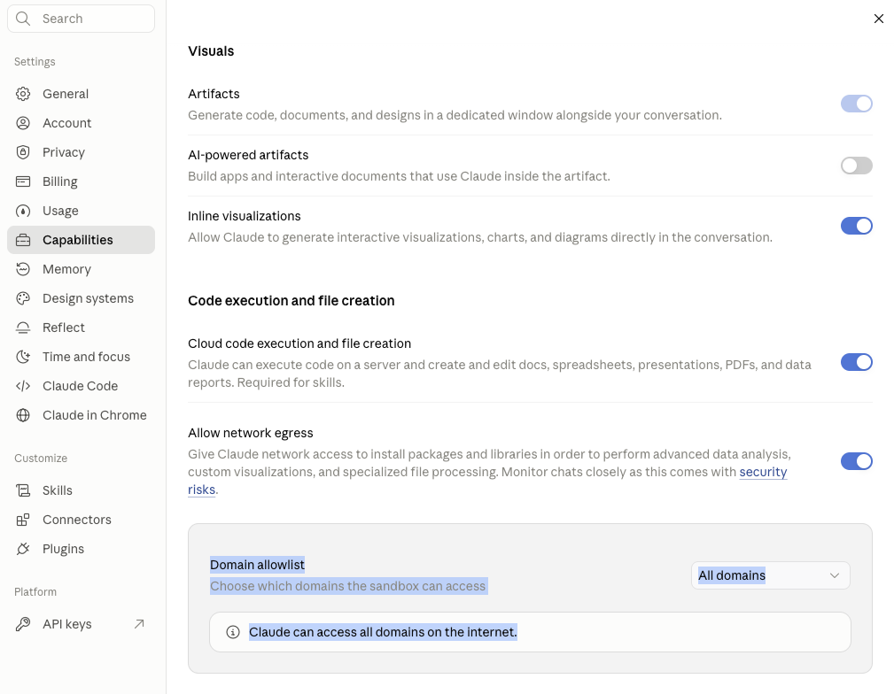
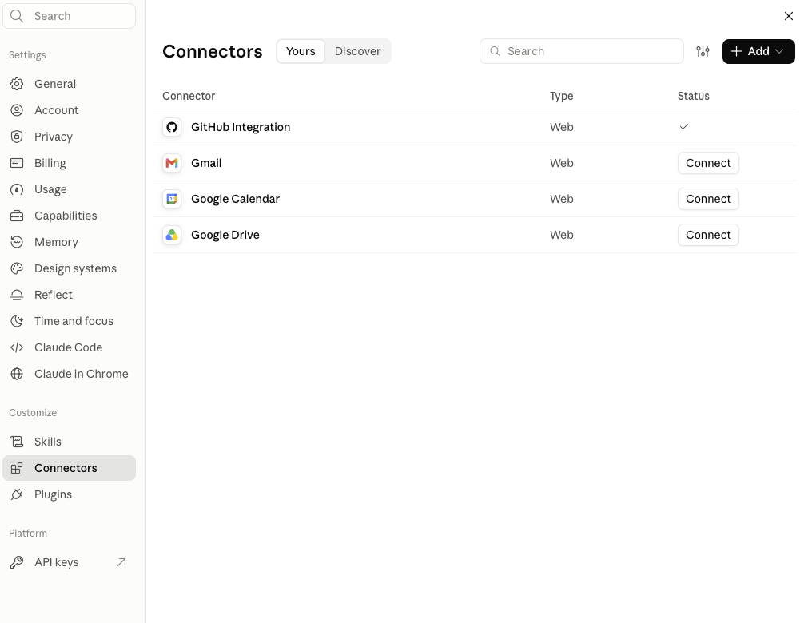
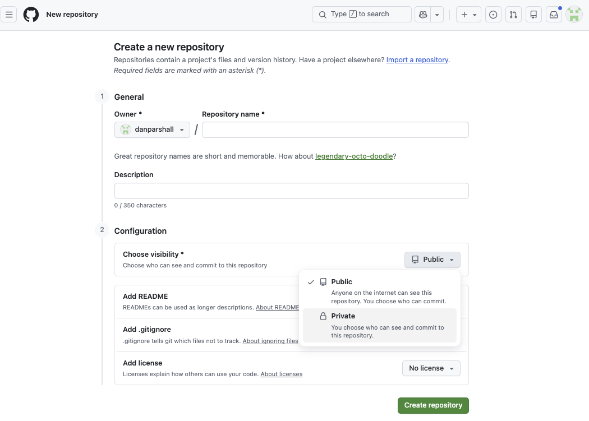
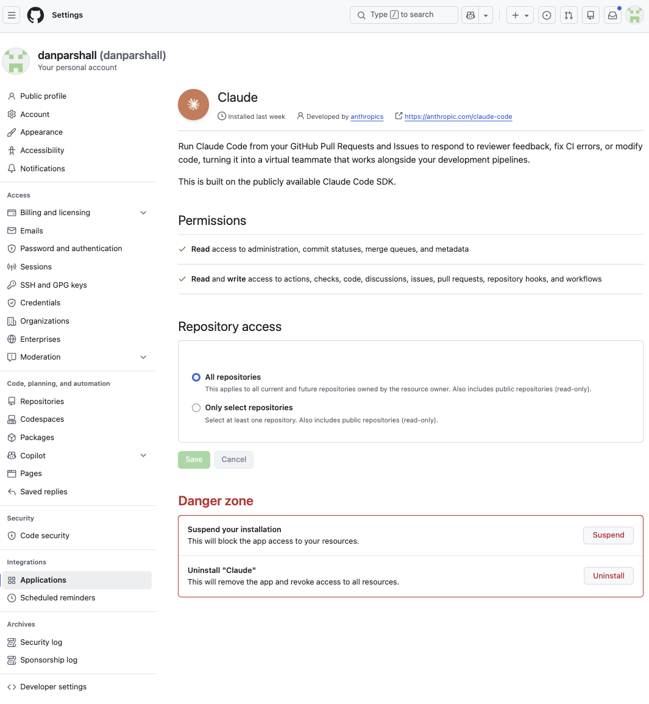
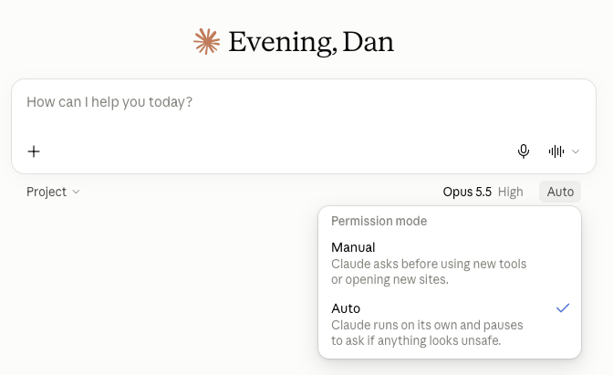

What is this, really?
Claude Researcher adds persistent memory to your claude.ai research sessions: a durable record of your projects, the papers you've read, the conversations you've had, and the reasoning that came out of them. The record lives in a private repository on GitHub — think of it as a version-controlled lab notebook that both you and Claude can read and write.
It was built for researchers whose work machines are locked down — no admin rights, no installing developer tools. Everything here runs through the browser: claude.ai on one side, GitHub on the other.
What a session feels like
Suppose you work on coastal adaptation policy. You open claude.ai and start a new chat: "Let's pick up the managed-retreat work." Claude reads your profile and your project's status file, then picks up where you left off: "Last time we ended on the tension between federal buyout efficiency and state-level political feasibility. Did you find the GAO report?"
You paste in a PDF; Claude files it, extracts the text, and indexes a summary against your reading notes. You discuss for an hour. You say "good stopping point," and Claude writes a permanent record of the conversation, updates the status log, and notes what's open for next time. Next week, in a fresh chat, everything is still there.
And the record is cross-linked as it's written: your project's STATUS.md
points into a running RESEARCH_LOG.md, which points to each session's
conversation summary. Months later, it's easy to reconstruct why you made a
decision — and easy to find the original conversation, if you ever need it.
How it works
Three pieces, all in plain sight:
- Two private GitHub repositories, owned by you. One holds your profile and preferences; one holds each research project — papers, notes, conversation records. Private means private: only accounts you authorize can see them.
- A GitHub connection. During setup you connect GitHub to Claude in claude.ai's settings, then install the Claude GitHub App. claude.ai holds the connection on its side; you never paste a password or token into a chat. You choose whether the App covers all your repositories or only the ones you select. "All" is simpler, because new research projects need no extra step. "Only select" is the cautious choice if your GitHub account also holds unrelated private work. Either way, each chat works only on repositories it has attached, and you can change or revoke access from GitHub at any time.
- Public workflow instructions. At the start of each session, Claude fetches its working rules from the public claude_researcher repo. Everyone runs the same public instructions, so a fix reaches every user at their next session. That reach is the reason the instructions are kept in the open. See Where does my data live below.
Setup is a few one-time clicks, and Claude tells you exactly what to click and when:





Where does my data live, and who can see it?
Your work lives in private repositories on your own GitHub account. There is no server of ours in the loop, no analytics, and no account with us. Nothing you write is sent to us.
Two companies do hold your data: GitHub stores the repositories, and Anthropic stores your chats and holds the GitHub connection you approved. Each handles it under its own terms. If your material is sensitive enough that either of those is a problem, this toolkit is not the right fit.
Your computer
Just a browser tab. Nothing installs. Your files stay here unless you upload them.
The chat
Your conversation, saved in your chat history. Anything that reaches the chat, Claude has seen.
Claude's sandbox
A temporary computer for this chat. Claude copies your repositories here, reads files, and runs scripts. It does not carry over to your next chat.
Your private repositories
The permanent record. This is what your next chat reads to pick up where you left off.
Will my chats be used to train AI models? That's governed by your model provider's terms of service, not by this toolkit, and those terms and their settings can change. You can ask an agent to read the current terms and translate them from lawyer to English.
Is my repository encrypted on GitHub? Yes. GitHub has stored repositories on encrypted disks since 2019. That protects against someone walking off with a hard drive. It doesn't protect against the more realistic risks: someone getting into your GitHub account, a repository accidentally switched to public, or a legal demand served on GitHub, which can read your data in order to serve it to you. Turning on two-factor sign-in for GitHub does more for you than encryption at rest.
The part that takes some trust in us is the instructions. At the start of each session, Claude downloads its working rules from our public repository, and then acts on your repositories using the GitHub access you granted. If we published bad instructions, or if our account were broken into, Claude could be told to do something you wouldn't want. We can't make that risk zero. What we can do is keep every instruction public, with its full change history, at github.com/danparshall/claude_researcher, so anyone can check what Claude is being told. The explainer prompt at the top of this page is there so Claude can look all this over for you before you decide.
Who's behind this
Claude Researcher is a collaboration between Dan Parshall (physicist-turned-data-scientist, now working on AI policy at the Canary Institute) and Andrea Lopez-Luzuriaga (economist). It grew out of our own research workflows, and we share it in the hope it's useful to yours.
The project is open source under the Apache 2.0 license. The full source, design notes, and development history are public in the GitHub repository. Found a problem? Ask Claude in any session to file an issue — or open one yourself.
Requirements
- A claude.ai Pro or Team subscription
- A free GitHub account
- A current Claude model. Opus 4.7 and the Claude 5 models work well. Opus 4.8 does not follow the setup reliably, so switch models if that's what you have selected.
- About 10 minutes for the one-time setup
- No installation, no terminal, no coding